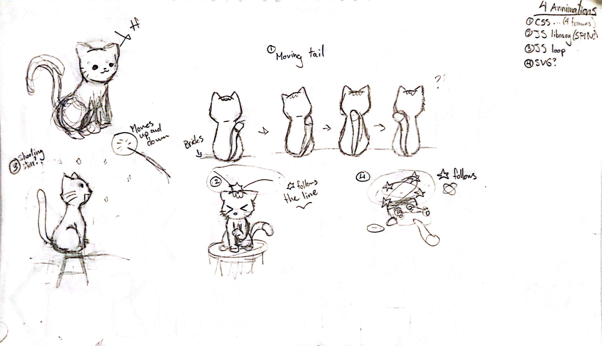
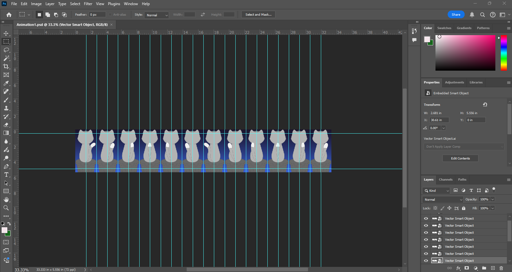
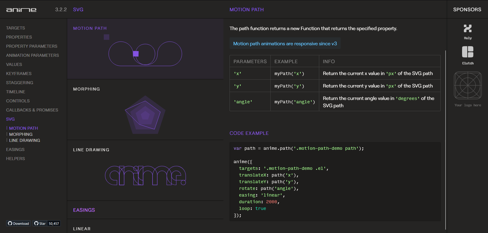
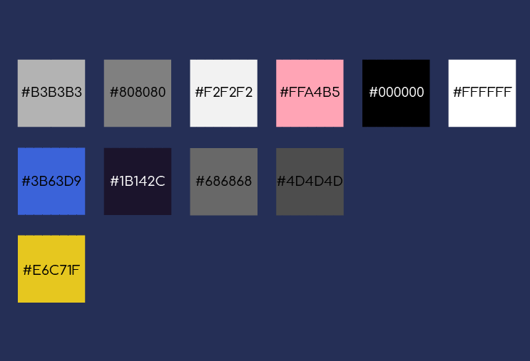
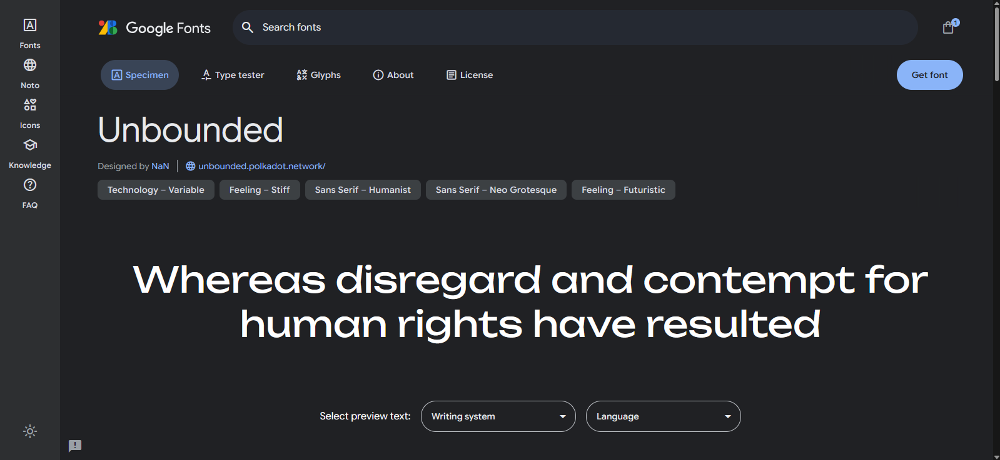
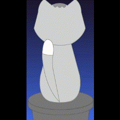
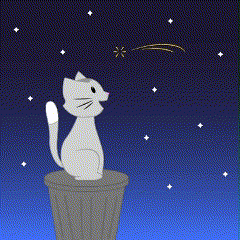
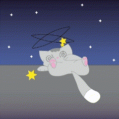

About
A short story made using four different animations for the Animation and Dynamic Websites class. I used a CSS sprite sheet, a JavaScript loop, and a JavaScript library.
Roles
- Illustrator
- Web Designer
- Animator

The Challenge
Although this was a relatively simple project, one of my biggest challenges was animating the first panel to achieve a fluid motion that not only looked visually appealing but also made sense within the context of the story.
The Solution
To overcome this challenge, I watched online tutorials and sketched additional frames to create a smoother transition and achieve the fluid motion I envisioned for the animation.
Process

This is the original sketches I made before going onto illustrator and refining the line art. This also helped to separate the elements I needed to be animated and those that do not needed to be animated.

All the frames for the first animation, put into Photoshop.

The rest of the animations were made using JavaScript. The last two were made using the following JavaScript library.

Top row (Cat): #B3B3B3, #808080, #F2F2F2, #FFA4B5, #000000, #FFFFFF
Middle row (Background + Trash): #3B63D9, #1B142C, #686868, #4D4D4D
Bottom row (Star): #E6C71F

The font used all trhoughout the site is the Unbounded font by NaN on from Google Fonts.
Final Product
To conclude, I had to write out my story for each animation as well as what technique was used.


